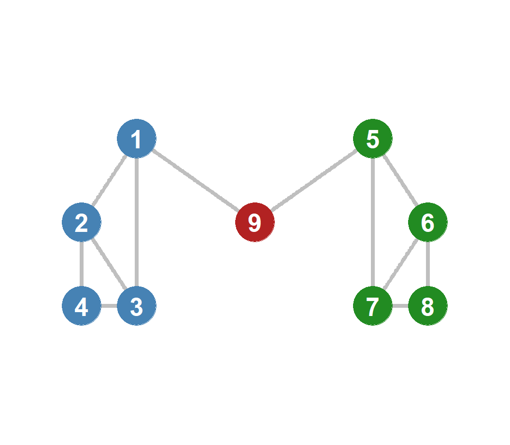
Social Capital, Network Constraint, and Brokerage

Ronald Burt (1995) argues that bridging structural holes delivers two primary types of social capital benefits:
1. Passive Exposure Effect (Information Access)
2. Active Control Effect (Brokerage Advantage)
An actor’s network constraint is determined by three main structural features:
1. Network Size (Degree)
2. Density (Clustering)
3. Hierarchy
The constraint \(c_{ij}\) that alter \(j\) exerts on ego \(i\) is calculated as: \[c_{ij} = \left(p_{ij} + \sum_{q \neq i,j} p_{iq} p_{qj}\right)^2\]
Where:
Aggregate Network Constraint (\(C_i\)) is the sum of dyadic constraints across all alters: \[C_i = \sum_{j} c_{ij}\]
Ronald Burt’s empirical work (e.g., 2004, 2005) conducts extensive studies in corporate settings to test SHT.
Key Findings for Low Constraint (Open Network) Managers:
Rank Nuance:
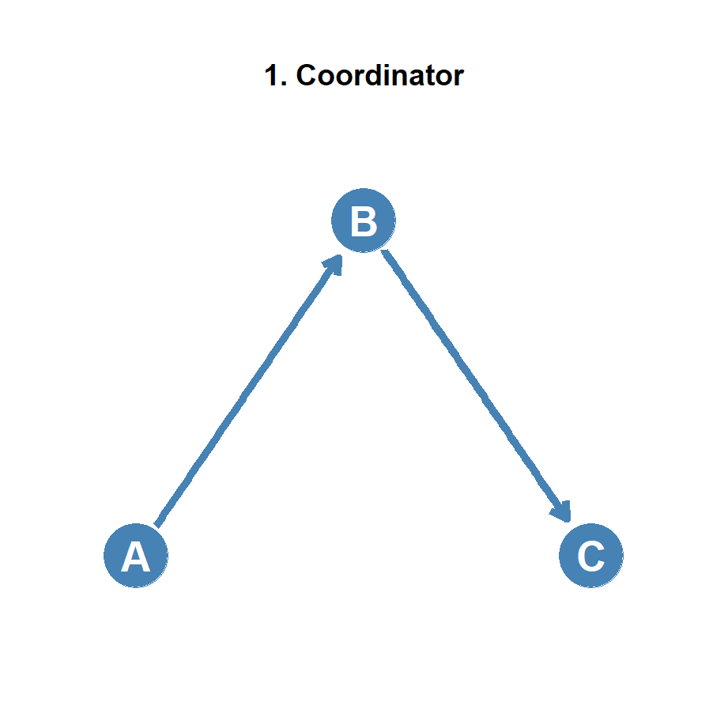
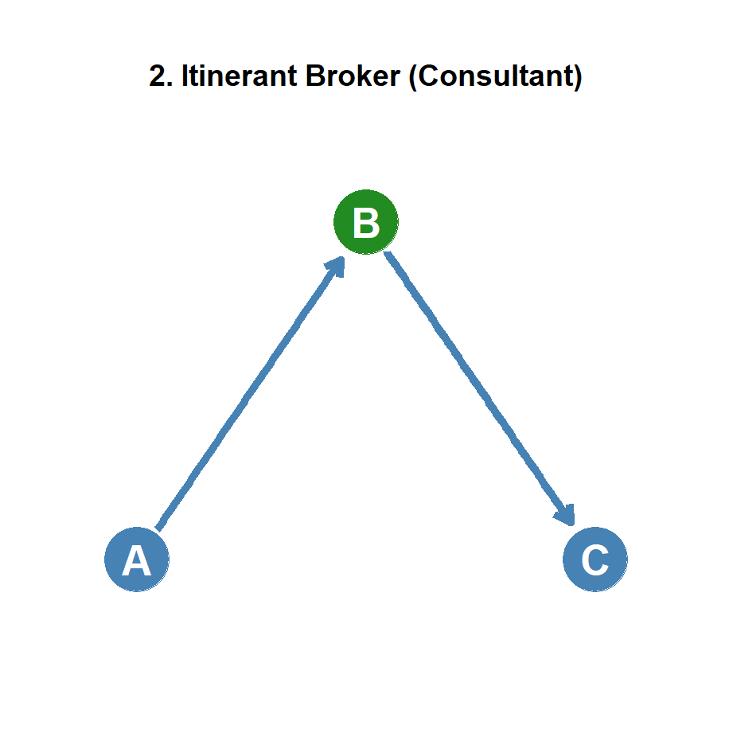
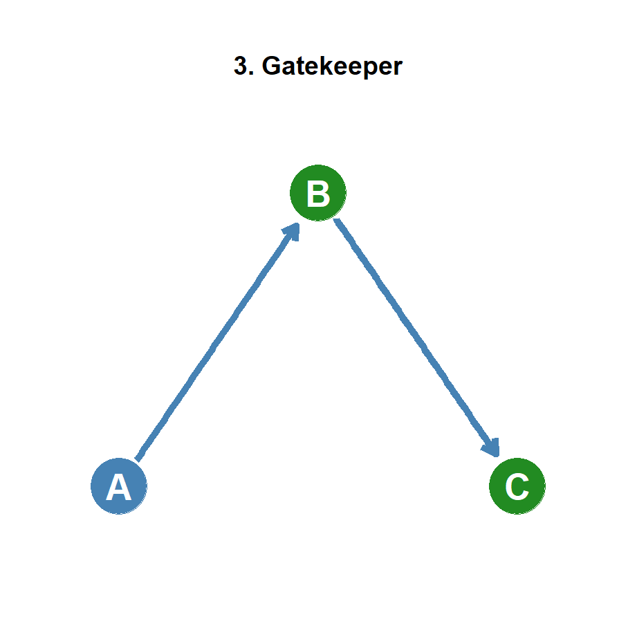
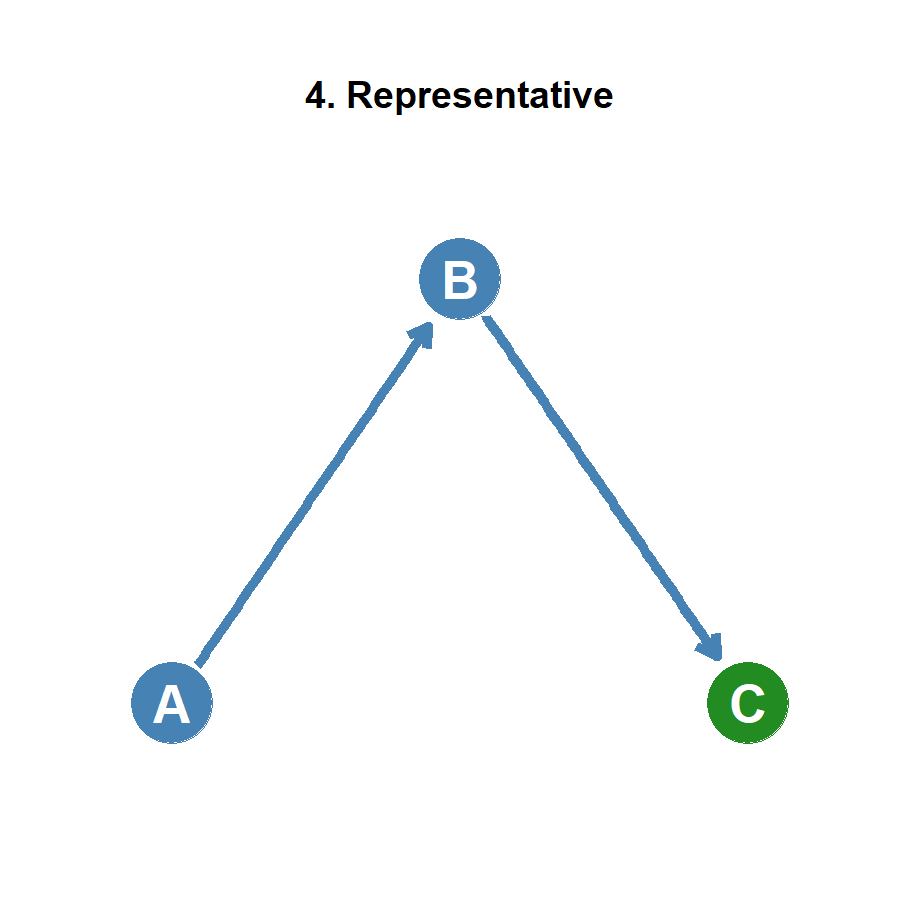
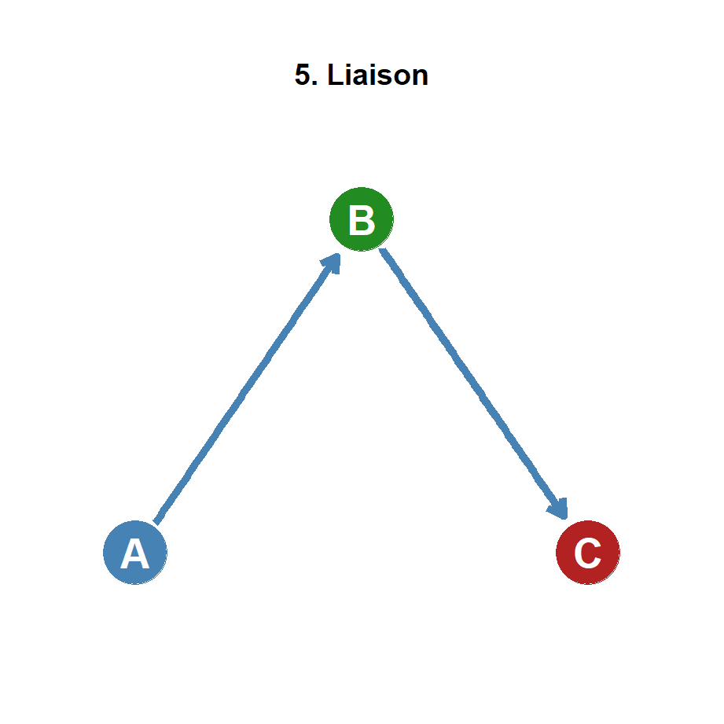
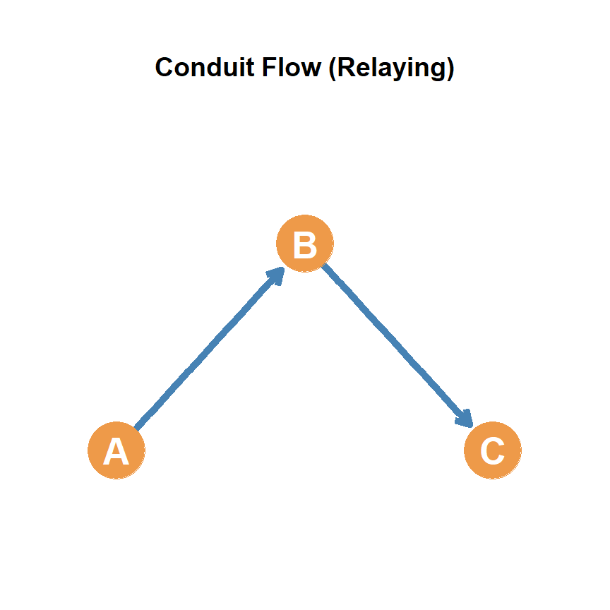
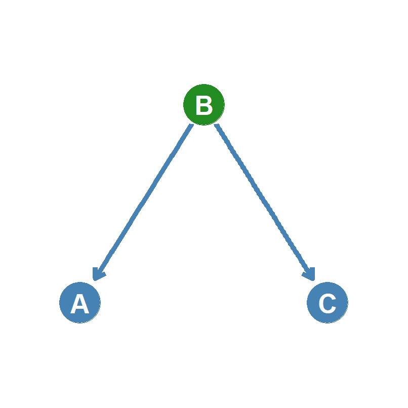
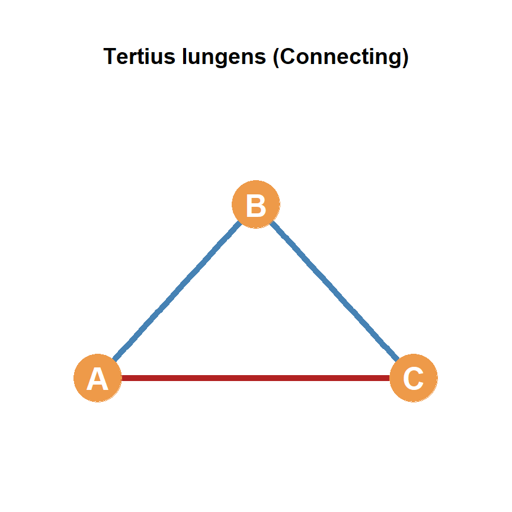
| Network Structure | Conduit | Tertius Gaudens | Tertius Iungens |
|---|---|---|---|
| Open Network (Absence of A-C tie) |
Information Transfer: B transfers information, knowledge, or resources between A and C where they have no prior connection. |
Arbitrage & Separation: B plays A and C against one another, or actively keeps them apart to maintain control. |
Introducing Alters: B introduces A and C, closing the structural hole by creating a new tie. |
| Closed Network (Presence of A-C tie) |
Facilitated Synthesis: B facilitates transfer between already-connected A and C and helps synthesize new knowledge. |
Divide et Impera (Divide & Rule): B cultivates conflict, competition, or separation between A and C. |
Coordinated Collaboration: B coordinates new collaborative action or deepens partnership between A and C. |
Aral and Van Alstyne (2011) extend Granovetter’s Strength of Weak Ties (SWT) theory by incorporating temporal flow and information complexity.
Static vs. Dynamic View:
The Core Tradeoff:
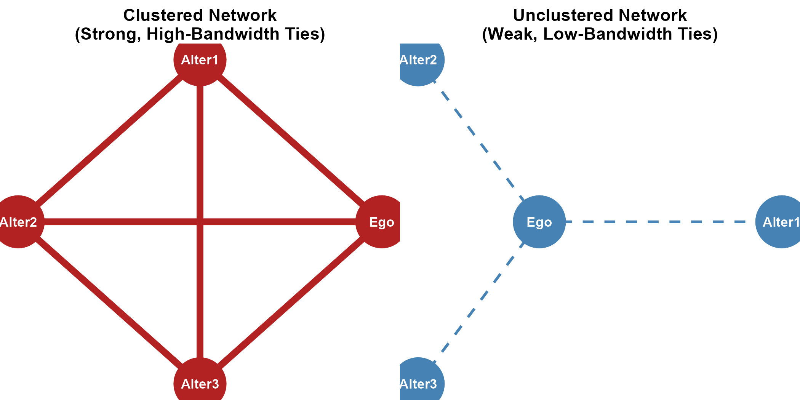
[1, 2, 3, 4].[5, 6, 7, 8].[9, 10, 11, 12].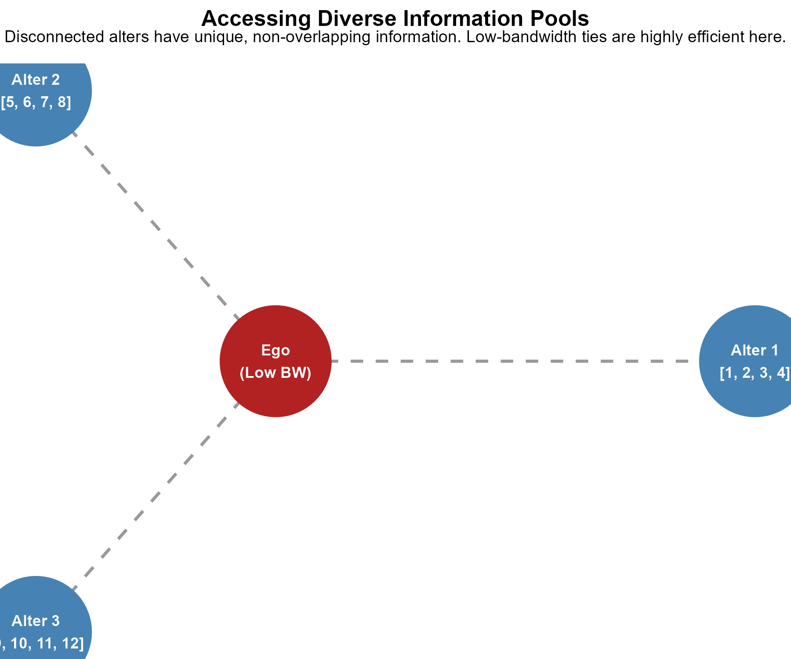
[1, 2, 3, 4].[1, 2, 3, 4].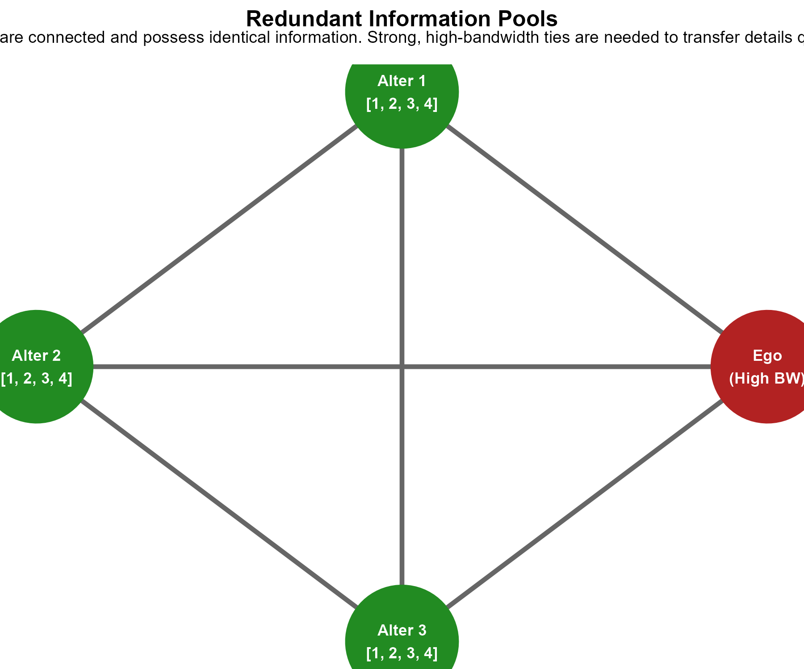
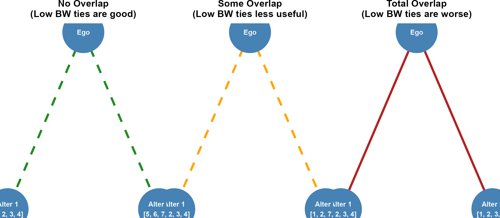